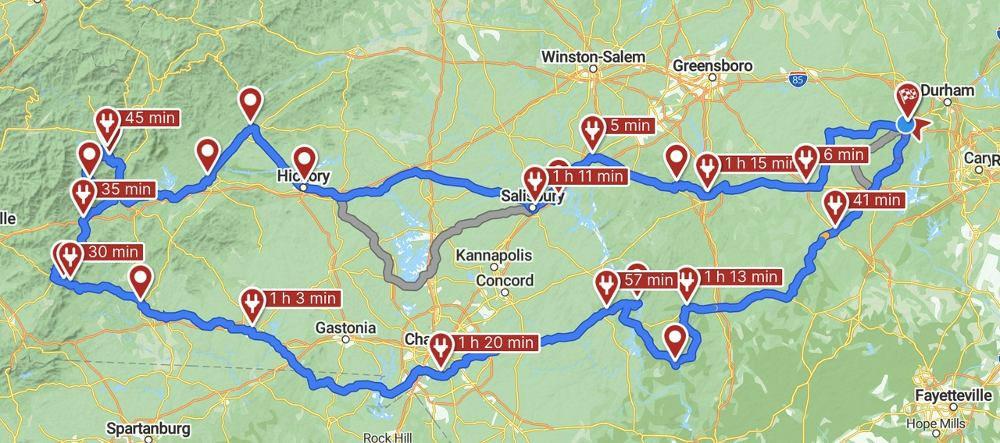
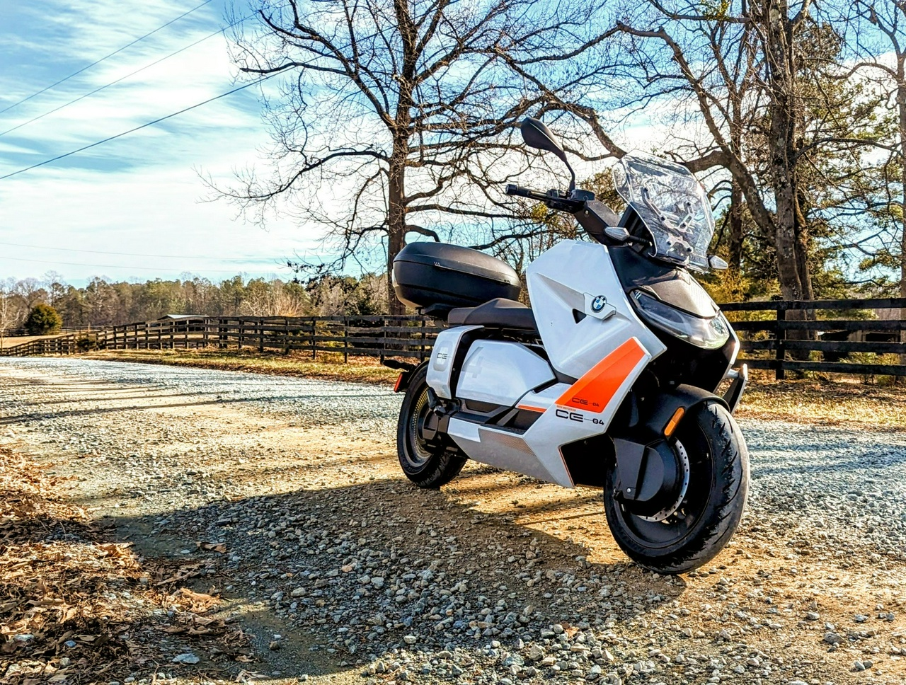

In Search of Native Lands: Intro
In 42 hours’ time, I'm embarking on a 3-day journey through the center of North Carolina, focusing on places that were important to the Native Americans of this area: 
My weapon of choice is the BMW CE-04 - an electric two-wheeler, which is why you see charging stops scattered around every 45-60 miles:

The charging stops have been strategically placed in towns I'd like to explore by foot, so expect to see a lot of small-town action. The route is flexible, but planned stops include:
- Town Creek Indian Mound - Hardaway Site - Morrow Mountain - Charlotte - Rutherfordton (overnight) - Lake Lure - Chimney Rock - Little Switzerland - Catawba Meadows - Joara Site - Lenoir - Hickory (overnight) - Trading Ford - Sapona Town Site - Salisbury - Lexington - Kewaunee Site - Asheboro
All said and done, the trip should clock in at around 575 miles. My biggest fear for this trip is hitting a deer during one of my early morning departures. The thing I'm most excited about so far is Little Switzerland, just because it's one of the few areas of this state that I have yet to visit.